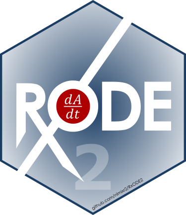

The rxode2 event bus
Source:vignettes/articles/rxode2-event-bus.Rmd
rxode2-event-bus.Rmd
library(rxode2)
#> rxode2 5.1.8 using 2 threads (see ?getRxThreads)
#> no cache: create with `rxCreateCache()`
has_bus <- exists("rxEventListen", asNamespace("rxode2"))
knitr::opts_chunk$set(eval = has_bus)Overview
rxode2 has a small event bus: a
publish/subscribe mechanism that tells other code when a top-level
simulation, fit or result is finished. A package that finishes an
operation emits an event; any number of listeners
registered with rxEventListen() are called with the event
name and its payload.
The bus is what nlmixr2log uses to record every fit, simulation, plot and saved object of a session without the user changing their code. Any package or script can listen, though, and any package can emit.
The bus is built around one rule: only the outermost
user-facing operation reports. A fit runs many
rxSolve() calls, a bootstrap runs many fits, and a logger
wants exactly one entry for what the user asked for – not one per
internal step.
The API
| Function | What it does |
|---|---|
rxEventListen(id, fun) |
Register the listener fun under id.
Registering the same id again replaces the old
listener. |
rxEventUnlisten(id) |
Remove the listener id. |
rxEventListeners() |
The ids of the registered listeners. |
rxEventEmit(event, ..., fun = NULL) |
Emit event with the named payload fields in
.... Delivered only at depth 0. |
rxEventScope(expr) |
Evaluate expr one level deeper; nothing emitted inside
it is delivered. |
rxEventDepth() |
The current scope depth (0 means “outermost”). |
rxEventSeq() |
The number of events delivered in this process so far. |
.rxEventEnter() |
Go one level deeper (for emitters; pair it with
.rxEventExit()). |
.rxEventExit(event = NULL, ..., fun = NULL) |
Go one level back up and, when event is given, emit it
– so it is delivered only when this was the outermost scope. |
.rxEventCall(call, fun = NULL) |
Normalize a recorded call (used for the call payload
field; see below). |
A listener is a function function(event, ...). It is
called with the event name as its first argument and every payload field
as a named argument, so it can pick the fields it needs by name and
ignore the rest.
Listeners are protected from each other and the caller is protected from them:
- a listener that errors gives a warning naming the listener and the event; the other listeners still run and the operation that emitted is not affected;
- listeners run inside a scope, so anything a listener triggers (for example a listener that solves a model) is silent – a listener can never cause another event;
- with no listener registered,
rxEventEmit()costs a single length check.
Listening
A recording listener keeps every event it receives:
mod <- rxode2({
d/dt(depot) <- -ka * depot
d/dt(center) <- ka * depot - cl / v * center
cp <- center / v
})
ev <- et(amt = 100) |> et(0:24)
p <- c(ka = 1, cl = 1, v = 10)
rec <- list()
rxEventListen("demo", function(event, ...) {
rec[[length(rec) + 1L]] <<- list(event = event, payload = list(...))
})
rxEventListeners()
#> [1] "demo"
s <- rxSolve(mod, p, ev)
length(rec)
#> [1] 1
rec[[1]]$event
#> [1] "solveComplete"
names(rec[[1]]$payload)
#> [1] "result" "object" "call" "kind"
rec[[1]]$payload$kind
#> [1] "rxSolve"
rec[[1]]$payload$call
#> rxSolve(mod, p, ev)The call field is the call the user typed, not the value
of every argument. When the call was built by do.call() its
argument values are inlined; single constants (such as
nSub = 10) are kept, and larger values are replaced by
`<value>` (or, when there are more than five of them,
by a single `<...>`) so a recorded call never embeds
a large data set:
s <- do.call(rxSolve, list(mod, p, ev))
rec[[2]]$payload$call
#> rxSolve(`<value>`, `<value>`, `<value>`)When you are done, remove the listener:
rxEventUnlisten("demo")
rxEventListeners()
#> character(0)To log a whole session to disk (fits, simulations, plots, saved objects, with their code and data), use nlmixr2log rather than writing your own listener.
The depth rule
Every emitting function enters one shared operation scope
and emits on its way out. An event is delivered only when no scope is
active, that is when rxEventDepth() is 0. Because all
packages share the same scope, nesting works across packages:
-
rxSolve()called directly emitssolveComplete; - the
rxSolve()calls insidenlmixr2()are silent, andnlmixr2()emits onefitComplete; - the fits inside
bootstrapFit()are silent, andbootstrapFit()emits one event for the bootstrap.
You can silence any code yourself with
rxEventScope():
rec <- list()
rxEventListen("demo", function(event, ...) rec[[length(rec) + 1L]] <<- event)
f <- function() rxEventScope(rxSolve(mod, p, ev))
s <- f()
length(rec)
#> [1] 0
s <- rxSolve(mod, p, ev)
unlist(rec)
#> [1] "solveComplete"rxSolve() emits nothing when it does not produce a
solved result: calling it with no model (to build an
rxControl() object) or when it errors. The depth is
restored on error, since scopes are left with
on.exit():
ctl <- rxControl()
## cl and v are missing, so this solve fails
out <- capture.output(res <- try(rxSolve(mod, c(ka = 1), ev), silent = TRUE))
inherits(res, "try-error")
#> [1] TRUE
unlist(rec)
#> [1] "solveComplete"
rxEventDepth()
#> [1] 0Worker processes: RXODE2_EVENT_DEPTH
A fit or driver may run its work in other R processes (for example
with future, mirai or callr).
Those processes have their own copy of the bus and would otherwise start
at depth 0 and report every internal fit. To keep them silent, the depth
is mirrored in the environment variable RXODE2_EVENT_DEPTH.
A process started inside a scope inherits the variable, and
rxode2 reads it when it is loaded, so the worker starts at
the same depth and emits nothing:
Sys.getenv("RXODE2_EVENT_DEPTH")
#> [1] ""
rxEventScope(Sys.getenv("RXODE2_EVENT_DEPTH"))
#> [1] "1"
rxEventScope(rxEventScope(rxEventDepth()))
#> [1] 2At depth 0 the variable is unset. A worker pool that is started before the scope (and reused) does not inherit it; work sent to such a pool is silent only if the code run on the worker enters its own scope.
Counting events: rxEventSeq()
rxEventSeq() counts the events delivered in this
process. Events dropped because of the depth rule, and events emitted
with no listener registered, are not counted. Taking the value before an
operation and comparing it afterward tells you whether anything reported
in between – nlmixr2save uses this to link an assignment
fit := nlmixr2(...) to the fit it produced:
s0 <- rxEventSeq()
s <- rxSolve(mod, p, ev)
rxEventSeq() - s0
#> [1] 1
s <- rxEventScope(rxSolve(mod, p, ev))
rxEventSeq() - s0
#> [1] 1
rxEventUnlisten("demo")Events emitted across nlmixr2
The event names and payload fields are a convention shared by the
nlmixr2 packages. rxode2 itself only emits
solveComplete; the rest come from the packages listed (each
needs the version with event-bus support, and does nothing with an
rxode2 that lacks the bus).
| Event | Payload fields | Emitted by |
|---|---|---|
solveComplete |
result, object, call,
kind
|
rxode2 (rxSolve()); nlmixr2est
(simulate(), predict(),
nlmixr2(est = "rxSolve"), vpcSim(),
augPred()) |
fitComplete |
fit, object, call,
objName, source
|
nlmixr2est (nlmixr2()); nlmixr2extra (drivers returning
a new fit); nlmixr2scm (the final model of runSCM()) |
fitUpdate |
fit, original, name,
what, inPlace
|
nlmixr2est (addCwres(), addNpde(),
addTable(), setOfv(), a deferred objective
computed on access); nlmixr2extra (preconditionFit(),
bootstrapFit()); nlmixr2targets
(what = "ui") |
fitResult |
fit, result, kind,
call
|
nlmixr2plot (plot(), vpcPlot(), augPred
plots; also data); nlmixr2extra (bootstrap, profile, lasso,
searches, multistart, …); nlmixr2scm (runSCM()); nlmixr2sir
(runSIR()) |
assignStart |
name |
nlmixr2save (:=, before it evaluates anything) |
assign |
name, value, call,
envir, cached, sha,
random, seed, since
|
nlmixr2save (:= on success, saveFit());
nlmixr2targets (the final fit of a target, named by
tar_name()) |
assignAbort |
name |
nlmixr2save (:= that errored) |
What the fields mean:
-
solveComplete:resultis the solved object,objectthe model (or fit) that was solved,callthe recorded call andkindhow it was solved ("rxSolve","simulate","predict","vpcSim","augPred";simulate(fit)reports"rxSolve"). Becauseobjectis the fit forsimulate(fit), a logger can link a simulation to its fit. -
fitComplete:fitis the new fit,objectwhat it was estimated from (a model, or the input fit for a driver),objNamethe variable name the user passed (orNULL), andsourcewhat produced it:"fit"fornlmixr2(), otherwise the driver (for example"linearize","multistart","scm"). -
fitUpdate:fitis the changed fit,originalthe fit passed in,whatwhat changed ("cwres","npde","table","ofv","ui","covariance", …), andinPlacewhether the user’s object now holds the change (thennameis its variable name, when known). A function that returns its input unchanged (for exampleaddCwres()on a fit that already has CWRES) emits nothing. -
fitResult: a result that is not a fit, attached to the fit it came from:result(a plot, or a summary in which embedded fits are reduced to their objective function and parameter table) andkind(for example"plot","vpcPlot","bootstrap","profile","sir"). -
assignStart/assign/assignAbort: bracket an assignment so a logger can tie the events in between to a variable name.cachedisTRUEwhen the value was restored from the nlmixr2save cache,randomandseeddescribe a random-number-dependent value, andsinceis therxEventSeq()value atassignStart.
A listener should treat fields as optional and ignore fields it does not know: new fields may be added, and other packages may emit their own events.
Writing an emitter
Feature-detect the bus
So that your package keeps working with an rxode2 that
has no bus, do not call the bus functions directly. Look them up when
they are needed, and do nothing when they are missing. The nlmixr2
packages use small wrappers like these:
.myEventBus <- function() {
exists("rxEventEmit", envir = asNamespace("rxode2"), inherits = FALSE)
}
.myEventEnter <- function() {
if (.myEventBus()) getExportedValue("rxode2", ".rxEventEnter")()
invisible()
}
.myEventExit <- function(event = NULL, ..., fun = NULL) {
if (.myEventBus()) getExportedValue("rxode2", ".rxEventExit")(event, ..., fun = fun)
invisible()
}
.myEventScope <- function(expr) {
if (!.myEventBus()) return(expr)
.myEventEnter()
on.exit(.myEventExit(), add = TRUE)
force(expr)
}A user-facing function
Enter the scope at the start of the function and leave it in
on.exit(), emitting the event from there so it is emitted
after the function has returned its value (returnValue())
and is not emitted on error (returnValue() is then
NULL):
mySimulation <- function(model, params, events) {
force(model)
.myEventEnter()
.call <- sys.call()
on.exit({
.ret <- returnValue()
if (inherits(.ret, "rxSolve")) {
.myEventExit("solveComplete", result = .ret, object = model, call = .call,
kind = "mySimulation", fun = "mySimulation")
} else {
.myEventExit()
}
}, add = TRUE)
## the solves in here are silent
.s <- lapply(1:3, function(i) rxSolve(model, params, events))
.s[[3]]
}
rec <- list()
rxEventListen("demo", function(event, kind = NULL, ...) {
rec[[length(rec) + 1L]] <<- paste(event, kind)
})
s <- mySimulation(mod, p, ev)
unlist(rec)
#> [1] "solveComplete mySimulation"Points to keep in mind:
-
Always leave the scope. Pair every
.rxEventEnter()with an.rxEventExit()inon.exit(..., add = TRUE); a scope left open silences the rest of the session. -
Force arguments before entering. R evaluates
arguments lazily: if the user writes
myFun(nlmixr2(model, data, "focei")), that fit runs when the argument is first used. Inside your scope it would be silent, soforce()the argument (or use it) before.rxEventEnter(). -
Silence internal work with a scope. Code that is
not a user-facing operation of its own – evaluating something to build a
cache key, a helper that refits a model, a parallel map – should run
inside
.myEventScope()orrxEventScope(). -
Emit one event per user call. When an operation
produces two things (a summary and a new best fit, say), emit the main
event from
.rxEventExit()and the second withrxEventEmit()afterward, still from theon.exit()code; you are then at depth 0 if your caller was. -
Record the call with
fun. Passingfun = "myFun"makes the head of the recordedcallmyFuneven when the user called it throughdo.call()or a function object.
S3 generics
For a generic, enter the scope in the generic itself, around
UseMethod(). All methods are then covered, and a method
that calls another solve or fit is silent. This is what
rxSolve() does:
mySolve <- function(object, ...) {
.myEventEnter()
.call <- sys.call()
on.exit({
.ret <- returnValue()
if (inherits(.ret, "rxSolve")) {
.myEventExit("solveComplete", result = .ret, object = object, call = .call,
kind = "mySolve", fun = "mySolve")
} else {
.myEventExit()
}
}, add = TRUE)
UseMethod("mySolve")
}
mySolve.default <- function(object, ...) rxSolve(object, ...)
rec <- list()
s <- mySolve(mod, p, ev)
unlist(rec)
#> [1] "solveComplete mySolve"
rxEventUnlisten("demo")The on.exit() handler set in a generic runs when the
method returns, and returnValue() there is the method’s
value. Put any early returns that should not emit (like
rxSolve()’s rxControl() shortcut)
before .rxEventEnter().
See also
-
?rxEventListenfor the reference documentation. - nlmixr2log, the logger built on these events.